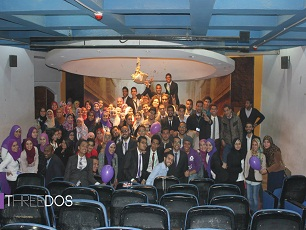
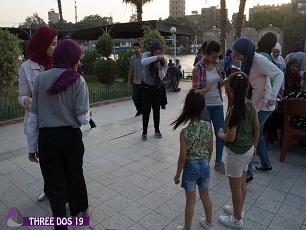

-

Courses
- A New course to teach students how to work on the Android
system in partnership with GSA.
- A New course to teach students how to work on the Android
system in partnership with GSA.
- A New course in (CEO) Chief Executive Officer.
- Expansion of workshops (CEO) Chief Executive Officer.
and increase the number of students and the developmen of content
-

Charity
- Work on blood donation campaign within the college BIS,
- (dam lw 3ndk) Awareness campaign about the importance of blood donation.
- Have been at the headquarters of the College for several days for(dam lw 3ndk).
- Covering one of the orphanages after educating members of the activity skills to communicate with children.
- Ending the project with an orphan day.(The orphanage project.)
-

Other
- A visit to the Indian Cultural Center as a cultural step to
increase the awareness of young people.
- A visit to
the pyramids of Giza and wandering among its various
features.
- The closing event of the year under the name of
(yankask ayden) And the presence of Dr. / Khaled Abu Shadi,
and / Bassem al-Shamma, and / Mahmoud Darwish,
and / Karim Al-Shazly, a / Islam Hajji, and coach / Youssef Dawara.
-

Courses
- Workshops to teach students web development skills, lasted for 9 sessions (duration of sessions 6 hours) (2014)
- Workshops to teach students web development skills, lasted for 7 sessions (Duration of the sessions 6 hours) (2015)
- Expansion of the juniors’ project. Working with two new schools are the Future School of Languages and Salah El-din School.
- Conducting workshops in (CEO) Chief Executive Officer through 7 sessions explaining all the requirements that qualify the student to become CEOs.
- And was implemented at the end of the course under the supervision of Mr. / Islam Refaat, the CEO of the company heaters, which was practical under its supervision
- A new project has been created (juniors) . The idea is centered around the holding of sessions (soft skills) for high school students. We held sessions at (Victoria School in Maadi)
- Worked on the marketing workshops in the field of marketing through 7 sessions explaining the concept of modern marketing and how to study the market and some theories of modern marketing.
- Conducting workshops in (CEO) Chief Executive Officer. Through 6 sessions explaining all the requirements that qualify the student to become chairman of the board such as (HR, Marketing, Supply chain, sales, finance).
-
charity
- Achieve 3 months of continuous work on educating children in several orphanages
- A ceremony for the children of Hospital 57357 in cooperation with the General Library of Egypt.
- Organizing the Children’s Day event in cooperation with the corporation of Egypt Public Library.
- Finally, the blood donation campaign within the College BIS in collaboration with (Ressala Charity) and the number of donors more than 250 donors.
- “2l dafa 3afa” is his campaign to collect blankets, 100 blankets were purchased and distributed to 100 families in the Duweika area before the winter of 2015.
-

Events
- Members’ opening was at the Library of Egypt Dokki.
- welcomed delegates (center of the cultural quarter in Hussein), and this link to the cultural side.
- The opening of the new members (held at EL Kasr Eleiny Medical College) in the presence of vocalist “Mustafa Abu Rawash"
- Conference in collaboration with a (7olol) to host and develop sites for the practical application on the content of a week-long web development workshop.
- Delegates’ opening was at the conference hall of the Syndicate of Applied in the presence of Mr. / Karim Ismail, as one of the trainers in the field of human development
- Job fair of more than 15 companies, including: EVO, Seif Group and other companies in the BIS Faculty of Commerce and Business Administration, Zamalek Helwan University, providing job opportunities for students and graduates.
- The establishment of a big event called (dma8k bkam) revolves around marketing skills in partnership with Euphoria and several student activities at Cairo University. In the presence of a group of specialists in the field of marketing. Under the supervision of the company (E-marketing)
-

Other
- A TV interview was held with (a7lamna 2l 7lwa) program.
- This is in addition to awareness campaigns such as “Follow me”, a campaign to raise awareness of the ethics and qualities of the Prophet peace be upon him
- (7ayah w lana feha 2l kra2a ) awareness campaign the importance of reading timing coincided with the timing of the Book Fair included the definition of new books in the exhibition, and provide a brief about some books. Fair included the definition of new books in the exhibition, and provide a brief about some books.
-

2016-2017
- Delegates’ opening was held at (2l m2wleen 2l 3rb club)
- Members’ opening was held at (2l rab3 2l skafy 2l hussien)
- Internship for best members of each committee at Smart land company.
- There were eight sessions for AC councils (CEO, Marketing, web design and web development).
- AC conference for delegates about real case, they work on it at the end of the sessions under the supervision of Mr./Islam Refaat, the CEO of the company heaters, to allow the students to practice on real-life work.
-

2017-2018
- Visit for 57357 hospital.
- Visit for Bahya’s hospital.
- “Share Happiness” Event for orphans.
- New council (stock market council).
- Delegates’ opening was held at Ramses Collage.
- (w yt3moon 2l t3am) Ramdan bags packing event.
- Members’ opening was held at Cairo library Zamalek.
- Our Catering Sponsors was (Bread and Butter) and (Yumamia).
- There was media coverage like: Veto, El Gomhuria, Cairo dar and El youm Elsab3.
- Six sessions in all councils (Stock market, Marketing, CEO, web design, and web development).
- (hya ) Event was held at Conrad Cairo hotel in corporation with Bahya’s hospital for breast cancer Awareness.
- AC conference (It was a real case about Plan B hotel) they worked on it at the end of the sessions under the supervision of Mr./ Wael the owner of the Hotel.
- Establish your Career job fair of more than companies such as at BIS Faculty of Commerce and Business Administration, Zamalek Helwan University, providing job opportunities for students and graduates.
- OC conference (the members classified into teams each team was consist of one or two members from each committee, those teams were responsible for getting creative ideas for startup companies and implement what they learned during the year, at the end they were discussed their projects in front of judgmental committee.
-
Courses
- Organizers at Egypt Career Summit.
- New councils (English Club), (Cyber security).
- Members’ opening was held at Career Gates, Delegates’ opening was held at Safir Hotel.
- The TV interview with the first-channel of Egypt on (Good morning Egypt) and talked about our student activity and our 3 dimensions of success
- Establish your Career job fair of more than companies such as at BIS Faculty of Commerce and Business Administration, Zamalek Helwan University, providing job opportunities for students and graduates.
- AC conference (It was a real case about pegasus compan for market research - el badr company for manufacturing - route - it share ) they worked on it at the end of the sessions under the supervision of the owners
- OC conference (the members classified into teams each team was consist of one or two members from each committee, those teams were responsible for getting creative ideas for startup companies and implement what they learned during the year, at the end they were discussed their projects in front of judgmental committee.
-
.jpeg)
Charity
- Visit for 57357 hospital.
- Visit for Bahya’s hospital.
- Event for orphans. (عطائك دفئ)
- Ramadan bags packing event. (مما تحب)
- (Protea) Event was held at Conrad Cairo hotel in corporation with Bahya’s hospital for breast cancer Awareness.